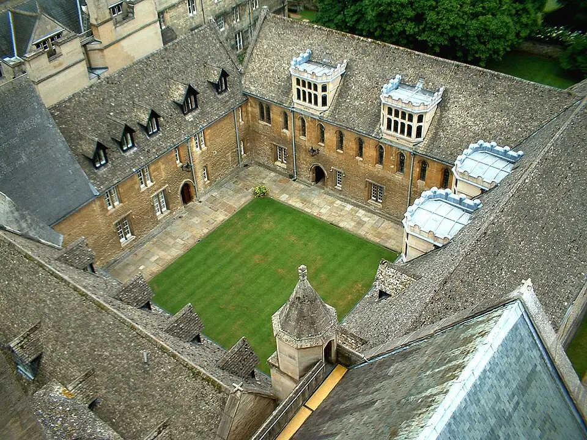
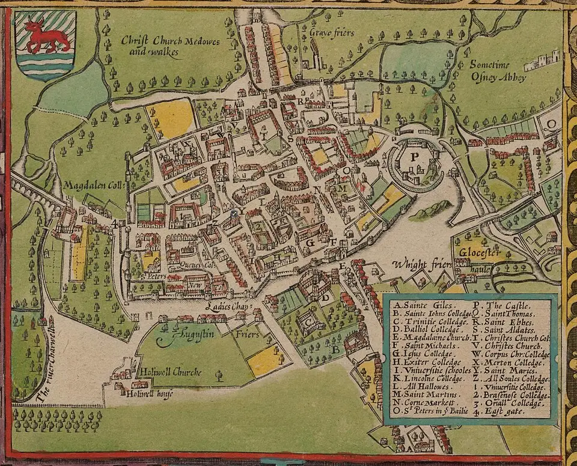

Đại học Oxford còn già hơn cả đế chế Aztec
Oxford đã có người giảng dạy từ khoảng năm 1096. Thành Tenochtitlan được dựng khoảng năm 1325, còn liên minh mà ta gọi là đế chế Aztec chỉ ra đời năm 1428.

Năm 1167, vua Henry II của Anh, đang căng thẳng với nước Pháp và với Giáo hội, cấm thần dân sang học ở Đại học Paris. Nhiều học giả quay về Oxford, nơi đã có người giảng dạy từ khoảng năm 1096, và thị trấn này nhanh chóng thành một trung tâm học thuật. Lúc ấy, bên kia Đại Tây Dương, thành Tenochtitlan còn chưa có. Phải hơn 260 năm nữa, đế chế Aztec mới ra đời.
Oxford bắt đầu từ lúc nào
Oxford không có ngày thành lập. Bằng chứng sớm nhất về việc giảng dạy ở đây có từ năm 1096, và học giả Theobald xứ Étampes đã giảng bài ở Oxford đầu những năm 1100. Năm 1188, sử gia Gerald xứ Wales giảng bài cho các học giả ở đây. Năm 1190, học giả nước ngoài đầu tiên được biết đến, Emo xứ Friesland, tới Oxford. Người đứng đầu trường mang chức chancellor ít nhất từ năm 1214. Năm 1248, vua Henry III ban hiến chương hoàng gia.
Năm 1209, sau những vụ xô xát giữa sinh viên và dân thị trấn, một số học giả bỏ chạy lên phía đông bắc, đến Cambridge, và từ đó hình thành Đại học Cambridge. Nghĩa là ngay cả Cambridge cũng già hơn Tenochtitlan hơn một thế kỷ. Vậy bên kia đại dương, Tenochtitlan ra đời thế nào?
Tenochtitlan và con đại bàng


Theo truyền thuyết của người Mexica, các bộ tộc lang thang sẽ dựng thành ở nơi họ thấy một con đại bàng ngậm rắn, đậu trên cây xương rồng mọc lên từ trái tim của Copil. Họ thấy cảnh ấy trên một hòn đảo nhỏ lầy lội giữa hồ Texcoco. Họ dựng thành ở đó, dùng những ô ruộng nổi chinampa để trồng trọt và mở rộng đảo.
Ngày tháng thành lập chính xác không rõ. Ngày 13/3/1325 chỉ được chọn vào năm 1925, để tổ chức kỷ niệm 600 năm thành phố. Còn "đế chế Aztec" theo nghĩa chính trị là Liên minh Tam thành giữa Tenochtitlan, Tetzcoco và Tlacopan, hình thành năm 1428 và tồn tại đến năm 1521.
Khi Hernán Cortés đến Tenochtitlan ngày 8/11/1519, thành phố có khoảng 200.000 đến 400.000 dân theo các ước tính hiện đại. Ở châu Âu lúc đó, chỉ Paris, Venice và Constantinople có thể sánh được. Cortés ước tính khu chợ Tlatelolco có khoảng 60.000 người mua bán mỗi ngày; giáo sĩ Bernardino de Sahagún đưa ra con số dè dặt hơn, 20.000 người ngày thường và 40.000 người ngày lễ.
Câu "Oxford già hơn Aztec" phụ thuộc vào cách chọn mốc.
Phép so sánh đúng đến đâu

Câu "Oxford già hơn Aztec" phụ thuộc vào cách chọn mốc. Nếu lấy năm 1096 cho Oxford và năm 1428 cho đế chế, Oxford đi trước hơn ba thế kỷ. Nếu lấy năm 1325, ngày dựng thành, Oxford vẫn đi trước hơn hai thế kỷ. Năm 1521, khi Tenochtitlan thất thủ trước quân Tây Ban Nha và người Tlaxcala, Oxford đã có người dạy học hơn 400 năm, và vẫn còn dạy đến hôm nay.
Người xưa cũng thích làm Oxford già thêm. Vào thế kỷ 14, nhà biên niên Ranulf Higden viết rằng trường do vua Alfred Đại đế lập ra từ thế kỷ 9. Câu chuyện này ngày nay bị coi là bịa, nhưng người ta đã tin nó đến tận thế kỷ 18. Nhưng ngay cả Oxford cũng chưa phải trường già nhất.
Một trường còn già hơn
Ở Fez, Maroc, al-Qarawiyyin được thành lập như một nhà thờ Hồi giáo năm 857 hoặc 859. Theo sách Rawd al-Qirtas của Ibn Abi Zar, người lập là bà Fatima al-Fihri, con gái một thương nhân từ Kairouan, Tunisia, đã dùng toàn bộ tài sản thừa kế để xây. Tên trường nghĩa là "của những người từ Kairouan". Một số sử gia hiện đại nghi ngờ câu chuyện này, vì Ibn Abi Zar không đáng tin lắm và một bảng gỗ khắc chữ tìm thấy trong thế kỷ 20 kể khác.
UNESCO và Guinness coi al-Qarawiyyin là trường đại học hoặc cơ sở giáo dục bậc cao còn hoạt động liên tục lâu đời nhất thế giới. Nhiều học giả thì cho rằng nó vận hành như một madrasa đến sau Thế chiến thứ hai, và chỉ thành đại học theo nghĩa hiện đại khi được tổ chức lại năm 1963.
Hình con đại bàng ngậm rắn đậu trên cây xương rồng ngày nay nằm giữa quốc kỳ Mexico, còn Oxford vẫn tuyển sinh mỗi năm. Câu "Oxford già hơn Aztec" là đúng, miễn là ta nhớ rằng cả "thành lập" lẫn "đế chế" đều là những mốc do người đời sau chọn.